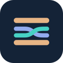

Netwich Settings
macOS High-Performance Internet Aggregator & Download Engine
Engine Bridge Connection
Checking connection…
Refresh
Open App
Download Interception
Capture Browser Downloads
Interception is enabled globally. Downloads open in Netwich automatically.
Skip Small Downloads
Leave small files (images, documents) in the browser to prevent overhead.
Minimum File Size Threshold
Downloads smaller than this size stay in standard browser downloading.
MB
Domain Exclusions
Add Excluded Site
No exclusions configured. All website downloads will be accelerated by Netwich.